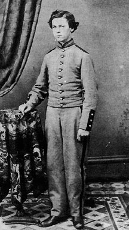

|

NAME: Charles Davis Burrows, Jr.
BORN: 1843
DIED: 1906
ALLEGIANCE: Union
HIGHEST RANK: Private
UNIT: 47th Regiment New York State Militia (also known as the 47th New
York State National Guard Infantry), Company F
RECORD: Mustered into the 47th New York State Militia on May
27, 1862. Member of garrison of Fort McHenry, Baltimore, until
September 1, 1862. Mustered into Federal service for 30 days on June
26, 1863. Served in defenses of Washington, D.C., until unit was
mustered out July 23, 1863.
|
|
Unlike today's U.S. Military, with its five service branches
and countless supplemental units, mid-19th-century America's
national military force was quite limited. When the Civil
War began, there were few trained, combat-ready men
available to fight for the Union. To make up the difference,
President Abraham Lincoln called for volunteers. Many states
hastily formed militias or mobilized their existing militias
to meet their federally mandated troop quotas.
Nineteen-year-old Charles Davis Burrows, Jr., of
Brooklyn, New York, responded to Lincoln's call in May 1862,
by joining the 47th Regiment New York State Militia (also
called the 47th New York National Guard Infantry). Private
Burrows's unit was mustered into Federal service for three
months and sent to garrison Fort McHenry in Baltimore until
its term of service expired on September 1. The 47th was
mustered into Federal service once again in June 1863, and
spent the next 30 days serving in the defenses of
Washington, D.C., during the Confederate army's Gettysburg
Campaign.
Upon the expiration of his regiment's 30-day term,
Burrows was discharged from the 47th and returned home to
stay. In November 1867, he married his childhood friend
Emily Pratt Phillips and fathered five children. In the
spring of 1906, Burrows contracted pneumonia and, after a
prolonged illness, died on March 13 of cardiac thrombosis.
Most of the men who served in state militias, like
Burrows, saw little fighting during the Civil War, but their
units contributed significantly to the effort. "The
mobilization of the war armies ... was an impressive
achievement, especially for a nation with so limited a
permanent military force," states Russell E. Weigley in
History of the United States Army. "In no small
measure, the achievement derived from the historic citizens'
militia, whose organized companies became the nucleus of the
war armies. In no small measure, too, however, the citizens'
militia made possible the great war itself, by giving the
states sufficient military strength, and thus a sufficient
residue of sovereignty, to wage war against each other."
Source: Civil War Times Illustrated
41:7 (February 2003), 22.
|